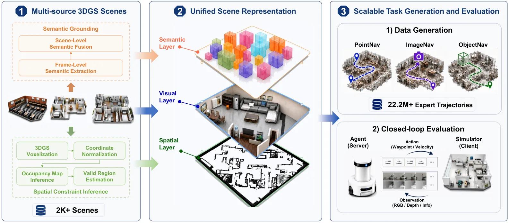
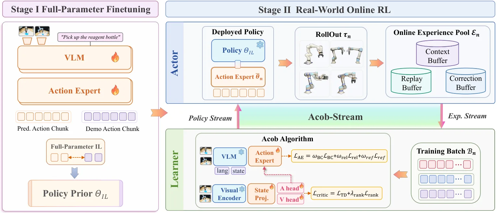
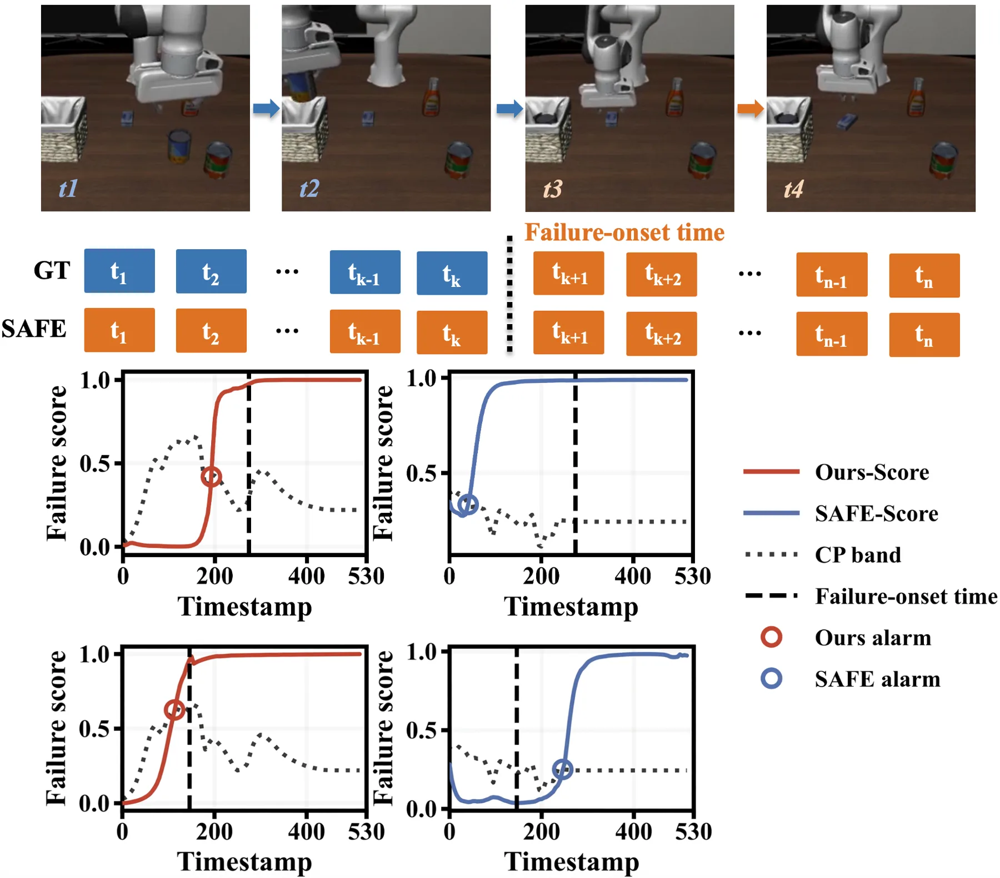
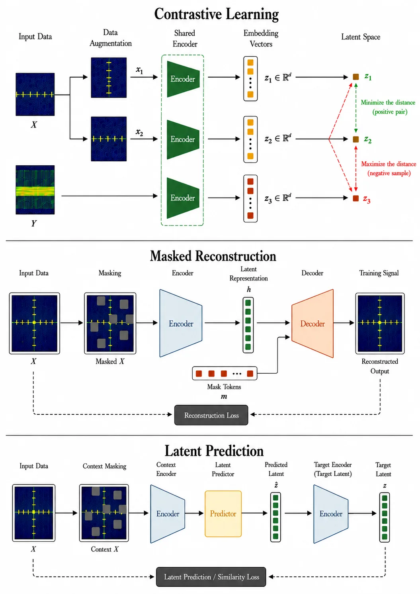
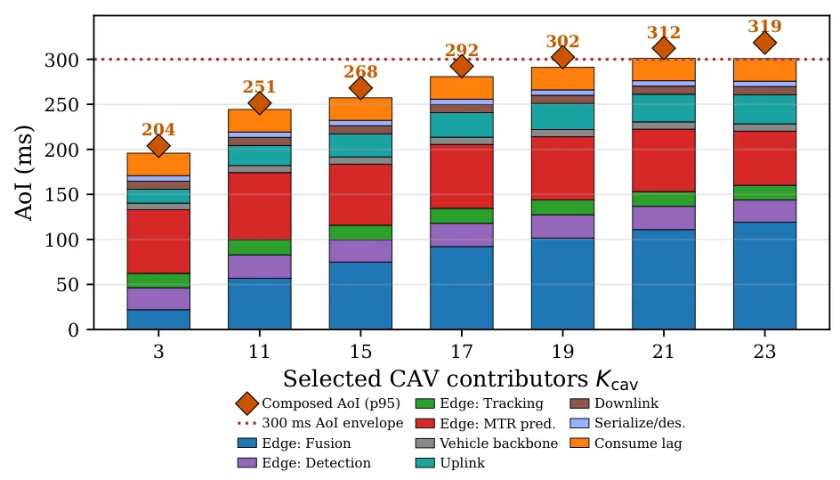
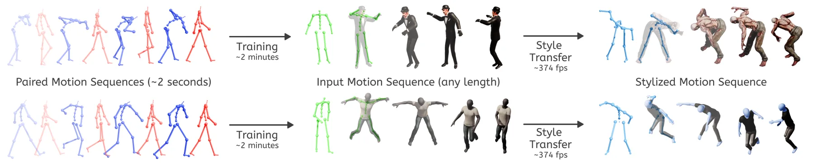

新论文 · 日期 2026-09-07 · score 16 · A层 · Embodied Navigation / VLN / Spatial Reasoning · cs.RO
内容级别：半海报
作者：Junhui Wang, Wei Yang, Xinyao Li, Ningjing Fan, Yuehao Yin, Xuecheng Chen, Chao Gao
评分 16/10
具身导航3DGSoccupancy闭环评测
一句话工作总结：这项工作把新视图渲染资产补成可执行、可评测的导航环境，连接了 3D/4D 表征与具身决策。最值得迁移的是从连续重建中自动推断碰撞/可达性约束，并将语义目标接入统一闭环协议。
NavArena 将固定的 3DGS 重建转化为带可通行性、有效目标和闭环评测的目标导向视觉导航基准。系统结合第一视角 RGB-D 渲染、由 Gaussian 密度与高度统计推导的 occupancy costmap，以及多视图开放词汇语义目标，在超过 2,000 个场景上生成 2,220 万条专家轨迹。
Fixed 3D Gaussian Splatting (3DGS) reconstructions provide realistic novel views but lack the traversability constraints, valid goals, and closed-loop protocols required for navigation evaluation. We introduce…

新论文 · 日期 2026-09-07 · score 12 · A层 · Robotic Foundation Models / VLA · cs.RO, cs.AI, cs.HC, cs.LG
内容级别：半海报
作者：Chenyu Su, Zhaolong Shen, Yuan Qian, Chen Qian, Rui Zhang, Feng Yan, Weixing Chen, Fei Zhang, Jiamin Wang, Shuang Cong, Weiwei Shang
评分 12/10
VLA在线强化学习策略稳定性流式系统
一句话工作总结：方法通过行为学习、全局回报传播和局部偏好排序的不同时间尺度协同校准价值估计，再用 invariant-state decoupling 与按需流式推理支撑闭环在线 RL。它对可靠性研究的启发是把策略漂移、价值不确定性和系统吞吐放在同一训练环中。
VLA-Precision 用 ACoB 算法和 ACoB-Stream 架构缓解真实世界 VLA 在线强化学习中的价值信号不可靠与大模型吞吐开销问题。论文在 9 个高精度化学任务、4 类任务和 4 种机器人形态上报告 98.3% 平均成功率、45.8 分钟/任务，并称吞吐/计算效率最高提升 10.9 倍。
Pretrained vision-language-action (VLA) models enable broad manipulation but remain unreliable in tasks demanding precision and repeatability. Applying real-world online reinforcement learning (RL) to VLA post…

新论文 · 日期 2026-09-07 · score 11 · A层 · Robotic Foundation Models / VLA · cs.RO, cs.CV
内容级别：半海报（待补全）
作者：Jie Ma, Zongxi Liu, Yi Zhu
评分 10/10
VLA失败检测主动学习时间戳
一句话工作总结：FailureSpot 将失败检测从事后视觉判断推进到动作执行过程中的时间戳定位。
方法利用动作 chunk 的弱监督信号和主动学习，只为不确定轨迹补充时间戳标注。论文同时评估 trajectory-level 与 timestamp-level 检测。
Vision-language-action (VLA) policies have shown strong potential for general-purpose robotic manipulation, but they can still fail unpredictably during long-horizon execution, making reliable failure detectio…

新论文 · 日期 2026-09-07 · score 10 · A层 · Robust State Estimation / Uncertainty · eess.SP, cs.AI
内容级别：半海报（待补全）
作者：Alonso M. Pacheco Huachaca, Juan J. Rodriguez Rodriguez, Ahmed Aboulfotouh, Nelson L. S. da Fonseca, Carlos A. Astudillo, Hatem Abou-Zeid
评分 10/10
无线基础模型OODRF sensingsurvey
一句话工作总结：它为“基础模型能否迁移到分布变化下的感知与定位”提供了系统分类。
这篇 survey 按信号识别与解调、信道表征、RF sensing/localization、beam management 和 spectrum sensing 五类 PHY 任务梳理 wireless foundation models。重点比较预训练、backbone、适配方式以及 ID、partial-shift 和 OOD 评估。
Wireless foundation models (WFMs) have emerged as a promising approach for learning reusable representations from large-scale wireless data and adapting them to downstream tasks. However, the rapidly growing l…

新论文 · 日期 2026-09-07 · score 9 · A层 · Robotic Foundation Models / VLA · cs.RO, cs.SY, eess.SY
内容级别：半海报（待补全）
作者：Tyler Landle, Jackson Isenberg, Abhijit Chatterjee, Alexandros Daglis, Umakishore Ramachandran
评分 10/10
协同感知边缘计算AoI轨迹预测
一句话工作总结：它把多传感器融合质量、预测计算量和信息时效性放进同一个风险预算控制问题。
Conductor 在 RSU 锚定视角下融合 CAV 信息并预测轨迹，用遮挡感知选择器和运行时控制器满足 Age of Information 约束。仿真覆盖最多 31 辆 CAV，并比较随机选择与 Oracle。
The planning algorithms inside an Autonomous Vehicle (AV) rely on information from on-board sensors whose line of sight is limited by emerging traffic conditions and occlusions. Edge-assisted creation of a uni…

新论文 · 日期 2026-09-07 · score 9 · A层 · Robust State Estimation / Uncertainty · cs.GR, cs.CV
内容级别：半海报（待补全）
作者：Jose Luis Ponton, Alexander Winkler, Ladislav Kavan, Yuting Ye, Petr Kadlecek
评分 10/10
运动生成OOD gatefew-shot可控性
一句话工作总结：其对空间智能的价值不在风格本身，而在于把可解释的时空因素分离并显式处理 OOD。
STyMo 将运动风格分解为静态姿态与时间动态，并提供运行时强度和身体区域控制。它还用 stylizability gate 避免 OOD 动作产生伪影，训练只需几秒配对数据和约一至两分钟。
Supporting a wide variety of motion styles is critical for creating diverse virtual characters, but current methods either require large stylized datasets or pre-trained models that cannot generalize beyond th…